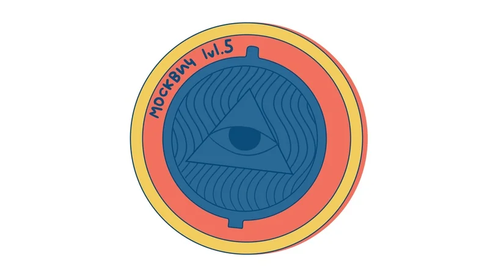
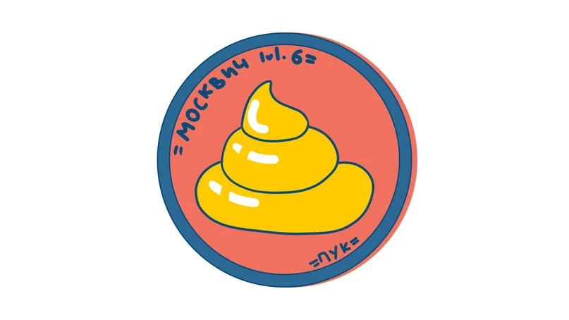

Данила Блюз написал инфернальный гайд для провинциалов — о том, кем же в действительности являются коренные обитатели столицы
Россия — страна уникальная. У всех людей страны как страны, а наша делится на две неравных части: Москву и провинцию. То есть вся эта огромная территория, с непроходимыми лесами, бескрайними снегами, полноводными реками — все это задворки Москвы, ее окраины. И жители России, соответственно, делятся на москвичей и русских. Есть еще третья категория населения, их называют «нерусские», но о них в другой раз.
Итак, кто такие русские, мы знаем. Это ты, это я, это вот она тоже, ну и тот тип, пожалуй. Простые ребята в классических костюмах «адидас» по будням и белых костюмах «адидас» по праздникам. Мы любим пиво из полторашек и семечки, у нас всегда в кармане есть нож-бабочка и татуировка на предплечье, которую сделал один знакомый за коробок плана.
А вот кто такие москвичи? Что это за существа такие? Почему так много простых русских пацанов и девчат бросают родные панельки и бегут в столицу ради того, чтобы там стать теми самыми пресловутыми москвичами? Эта херня мне непонятна.

Что суть есть такое Москва? На самом деле Москва — это не город, не «звонят колокола», не столица нашей Родины. Москва — это огромный клоп, присосавшийся к России и пьющий из нее кровь. Панцирь его огрубел от коросты из небоскребов, кремлей и тысячи слоев тротуарной плитки, а жадный хоботок проник в самую глубь тела страны, добравшись до самых кипучих и сытных ее артерий. Москва с каждым днем раздувается, жиреет, с чавканьем поглощая кровь страны. Жители столицы с радостью ползают по этому пульсирующему чудовищу, гладят его, целуют и приговаривают: «Ох, как похорошела Москва при Собянине!»

Но так говорят не настоящие москвичи, а «понаехавшие» — лимита, которая не видела, какой была Та Самая Москва. Какой именно она была, никто вам не скажет: если уж вы ее не видели, то о чем с вами разговаривать. А если видели, то тут и говорить нечего, все без слов понятно.
Настоящие москвичи Собянина терпеть не могут, потому что Собянин из рода древних чукотских шаманов и не поддался на колдунство Москвы. Он до сих пор презирает тамошнюю роскошь и из здания мэрии, буквально задыхаясь, мчится за город, где у него обустроена теплая юрта с запасами галлюциногенных грибов и вяленой оленины. Там он сбрасывает с шеи осточертевший галстук, скидывает костюм и, схватив бубен, начинает плясать шаманские пляски, дабы сбросить с себя московскую скверну. А утром снова на работу.

Пока вся Россия гибнет от усталости в шахтах, на заводах и в офисах за порцию доширака и бутылку пива «Боярин», москвичи живут припеваючи, ни в чем себе не отказывая и при этом совершенно не работая. Работают в Москве только приезжие русские и нерусские. Вы не встретите москвича на улице, в очереди супермаркета, в торговом центре, в кофейне или в Макдоналдсе. Москвичи перемещаются по секретным подземным тоннелям и лишь изредка поднимаются наверх, для того чтобы съесть очередного русского или забрать закладку на детской площадке.
Да, москвичи не питаются обычной едой, они, как и их монструозный город, живут тем, что сосут кровь русских людей. Нерусских москвичи боятся есть, потому что у тех может быть разряд по самбо или травмат.
Размножаются москвичи тоже с помощью приезжих. Стандартные пути размножения им недоступны, потому что все москвичи поголовно геи и лесбиянки. Чтобы пополнить свою темную армию, москвичи похищают из роддома младенца и относят его главной москвичихе Божене. Слюна Божены за многие века эволюции стала особо токсична, и стоит ей укусить младенца, тот тут же получает кокаиновую зависимость, покрывается автозагаром, обрастает модной прической от Сергея Зверева, а на подгузниках проступает лейбл «Гуччи». Теперь, чтобы вновь обратить карапуза в русского и вывести из организма ядовитые бациллы Божены, его нужно на неделю запереть в сибирской бане, хлестать веником и поить водкой под военные песни в исполнении хора Александрова. Но делать это нужно вовремя, пока в паспорте у него не появилась московская прописка. После этого никого обратить в русского не удавалось, потому как непреодолима сила московской прописки.

Тайный совет москвичей составляют: Божена Рынска, Андрей Молохов, Александр Власьевич Масляков, Алла Бафометовна Пугачева, Гипербарей Алибасов, Церберетелли и беглый Лужков, который с женой прячется в специальных катакомбах под мэрией и подслушивает Собянина через канализацию. Возглавляет совет дрессированный черный козел Гаврюша.

Выше я уже сказал, что москвичи не работают. Но откуда же тогда берутся у них огромные склепы в сталинских высотках в центре, откуда лимузины и кабриолеты, откуда деньги на кокаин, крем-брюле и ставки в игровых автоматах? А все потому, что москвичи буквально срут золотом.
Да, каким-то чудным образом их организм переваривает кровь русского народа так, что на выходе получается чистейшее золото 999-й пробы. Но все не так просто. Дело в том, что золото из них выходит не в чистом виде и даже не в форме каких-то обтекаемых слитков, нет. В москвичах золото превращается в готовую бижутерию, в причудливой формы ожерелья, диадемы, кольца, браслеты и сережки. Оттого-то москвичи вечно всем недовольны, вечно ходят с кислой миной, будто лимонов насосались. Постоянно они то про Собянина ноют, то президент им не тот, то реновации им не нравятся, то пробки, то дорогу где-то перекопали, то официант на них не так посмотрел. А дело в том, что вся эта изысканная ювелирка безбожно раздирает им анусы своими фигурными загогулинами.